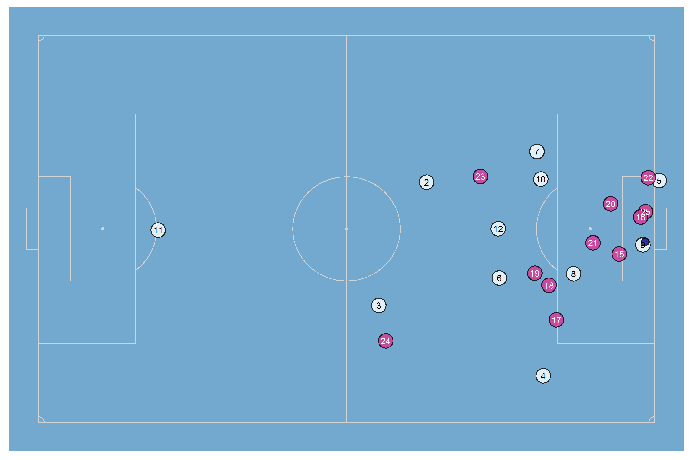
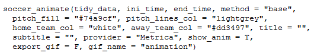
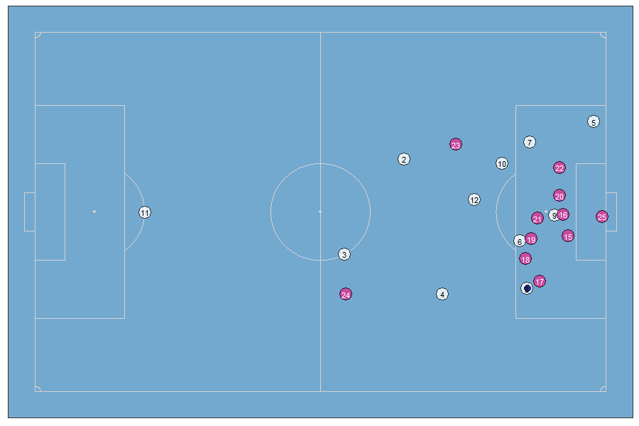
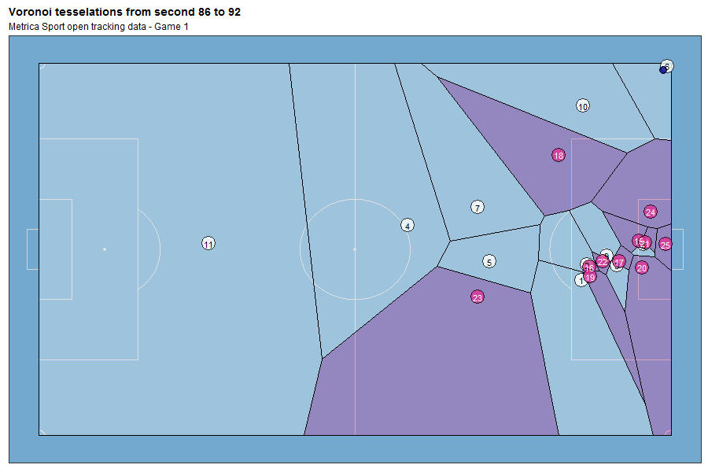

I just published my first R package: {soccerAnimate}, which allows you to create 2D soccer animations using tracking data. Here I’m going to tell you some details about its functionalities and future additions.

Main functionalities
Currently all functions of the package are prepared to work only with the data format of the data provider Metrica Sports, due they made public a tracking dataset as example (here).
Details about each available functions of soccerAnimate package is presented in the following paragraphs:
1) To prepare the data before to visualizate it
The get_tidy_data() function allows you to import data to RStudio and to process it in order to have the optimal structure to later do the visualizations.
In addition to the above, along the process also another task are executed: characters cleansing to get the shirt number of players, data joining between both the home and away team, goal keeper identification, etc. Here an example of the output data format:
## # A tibble: 6 x 9
## Period Frame Time Player x y Team is_gk Second
## <int> <int> <dbl> <chr> <dbl> <dbl> <chr> <lgl> <dbl>
## 1 1 1 0.04 11 0.0861 35.2 Home TRUE 0
## 2 1 1 0.04 1 34.3 23.6 Home FALSE 0
## 3 1 1 0.04 2 35.4 34.8 Home FALSE 0
## 4 1 1 0.04 3 32.5 43.8 Home FALSE 0
## 5 1 1 0.04 4 33.7 53.5 Home FALSE 0
## 6 1 1 0.04 5 43.1 18.6 Home FALSE 0As it is possible to observe, most of columns are auto explained by their names, excepting “is_gk” which is a boolean variable that says if the player is or not is the goal keeper. Data from Metrica Sports has 25 frames per seconds, so the sample rate is 0.04 seconds.
2) To get information about specific events
The function events_info() gets events information from the event dataset. You could get info about either shots, goals, free kicks or corner kicks. Here an example for the goals of the Game 1 of the dataset:
## # A tibble: 3 x 9
## Team Type Subtype Period StartTime EndTime StartFrame EndFrame Event
## <chr> <chr> <chr> <dbl> <dbl> <dbl> <dbl> <dbl> <chr>
## 1 Home SHOT HEAD-ON TARGET~ 1 91.6 92.4 2289 2309 GOAL
## 2 Home SHOT ON TARGET-GOAL 2 3600. 3601. 90005 90026 GOAL
## 3 Home SHOT ON TARGET-GOAL 2 3961. 3962. 99032 99046 GOALOne of the current main usefulness of this, besides to count the number of the events, is to know at which times/frames those specific events occurs (StartTime & EndTime + StartFrame & EndFrame). Then you could create both static plots and animations for those times/frames.
3) To visualize an unique specific frame
The function soccer_plot() creates a static plot of one specific and unique frame. It is useful to explore and pre visualize your data and your aesthetic and geometrical method setting, before to create the animation (whose creation time will be longer). You are able to export this plots as PNG files.
Here an example of the frame 99040 of the game 1. This frame is part of the frames range related to the 3rd goal of the home team, considering the info got it previously.

4) To create 2D animations
At this point you will be able to create the 2D animations. For that you have to use the function soccer_animate(). Here the arguments of the function and their explanations:

tidy_data: ordered and processed data got it from the function get_tidy_data()
ini_time & end_time: initial and end time, in seconds, to consider for the animation. This info could be get it looking at columns StartTime y EndTime of the events information dataframe got it with the function events_info()
method: geometrical method to use for the 2D spatial visualization and analysis 2D. Teh enabled options are: “base” (without any specific method), “convexhull”, “voronoi” or “dealunay”.
pitch_fill, pitch_lines_col, home_team_col & away_team_col: all of these variables are related to the filling colour of (in the same order): the pitch area, the pitch lines, the home team players and the away team players.
provider: Data provider. For the moment only “Metrica” is supported.
show_anim: boolean variable (T/F) to set if the RStudio Viewer shows or not the animation.
export_gif: boolean variable (T/F) to set if the animation should to be or not exported as GIF file.
gif_name: filename of the GIF file to export.
Now a couple of additional examples of animation outputs:


In this link you will find the github repository with the instructions to install and to use the package, in addition to some code examples.
Future additions
Currently I’m thinking to add this new features:
Stats report at both player and team level, including minutes played, distance walking/jogging/sprinting, velocity, etc.
Heatmaps for individual players along different time intervals.
To add events information along the animations
More aesthetics customization options (themes, fonts, etc.)
Better documentation
To implement some of the soccer analytics developments, e.g. a soccer pith control model.
Finally, I want to say that I’m open to suggestion of improvements and new implementations. There is also a space for anyone who want to contribute to the pacakge development.
If you have any question or feedback please feel free to reach me by Twitter @DatoFutbol_cl or to my email account: ismaelgomezs@gmail.com.